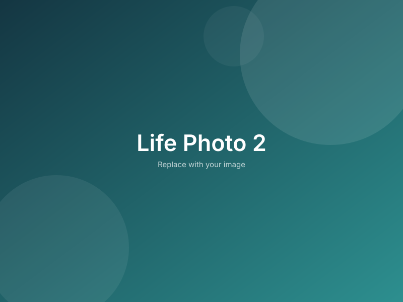
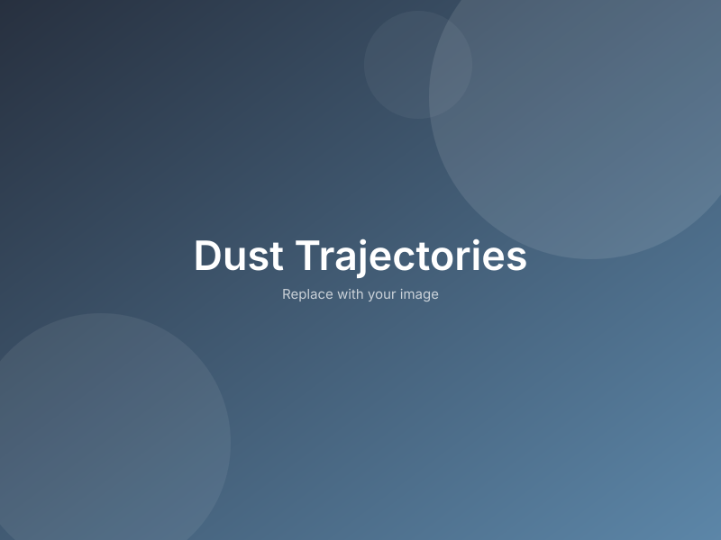
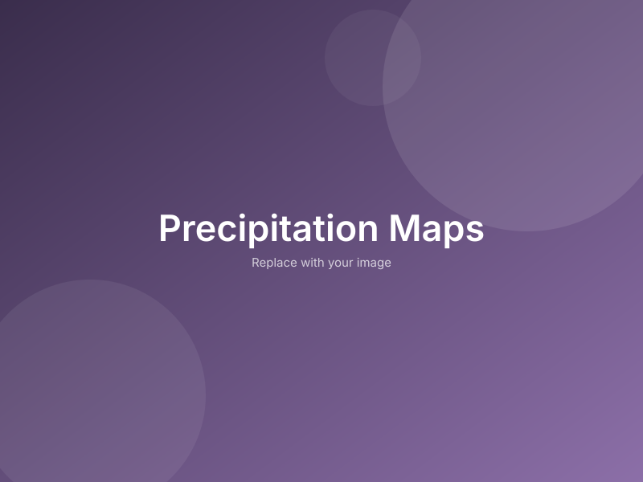

Yuqi Zhang (张雨麒)
PhD student at BU Astronomy
I am a PhD student in Prof. Wen Li's research group and developer passionate about AI-assisted computational space physics research. I am currently investigating Earth's electron precipitation through REAL cubesat. My work focuses on data analysis, simulation, and building tools that bridge the gap between physical theory and numerical computation. As a undergraduate, I worked with Prof. Shengyi Ye on planetary dusty physics including Mars and Jupiter. My long term goal is to study planetary magnetospheres comparatively.
About
CVEducation
Work Experience
Developing a Python-based tool for Coronal Mass Ejection evolution
Worked on Martian and Jovian dust projects.
Awards
Research Interests
Hobbies
Biography
My name is Yuqi Zhang, pronounced /y tɕʰi ʈʂɑŋ/ in Mandarin Chinese (with tones: Yǔqí Zhāng). However, I’m totally fine with different pronunciations of my first name, such as “Yuki,” “Yuchee,” “Youki,” or “Youchee.” Please feel free to pronounce it whichever way is easiest and most comfortable for you!
I grew up in Dalian (大连), a city in northeastern China. It was a beautiful coastal city where I spent my first 18 years there. Besides, I went to Canterbury, UK for my sixth year in primary school with my mother, who was a visiting scholar at University of Kent.
As an undergraduate at SUSTech in Shenzhen (深圳), I chose Geophysics as my major in the second year with focus on space physics. I worked with Prof. Shengyi Ye on planetary dusty physics, studying the dust environments around Mars and Jupiter. In spring semester of the third year, I went to UC Berkeley as an exchange student. My wife and I met in English of Academic Purpose course and got married in our fourth year.
I am now a PhD student in astronomy at Boston University, working with Prof. Wen Li on Earth's electron precipitation.
Outside the lab, I enjoy soccer, table tennis, badminton, strategy games, and cooking. Moreover, I love traveling.

Where I have been
Geographic life trajectory
Places I have studied, worked, lived, and explored.
- Country border
- First-level boundary
- Second-level boundary
- Disputed area
First-level priority is study/work → travel → live → transfer. On second-level regions and precise cells, live takes priority over all other purposes.
Stay log
Loading the stay log…
| City | State / Province | Country | Purpose | Stay start | Stay end |
|---|
Precise locations use 0.5° × 0.5° longitude/latitude cells. Coordinates are approximate for each place. Second-level regions are prefecture-level cities in China and counties in the U.S.; Boston is shown in Suffolk County. “Present” marks an ongoing stay.
Dashed outlines follow Natural Earth’s disputed-area dataset. Hover over or select an outline to read its source notes.
Map data: Natural Earth, geoBoundaries, and the U.S. Census Bureau. Sources & licenses.
Research
My research lies at the intersection of computational physics and scientific computing. I develop and apply numerical methods to study physical systems, with a particular focus on simulation, modeling, and data-driven discovery.
Current research directions include dust dynamics in planetary environments, high-performance simulation frameworks, and the application of machine learning techniques to physical problems.
Selected Figures


Publications
Conferences & Preprints
Projects
CME-MOSS
Research-grade, multi-spacecraft CME/ICME analysis software that queries the CCMC DONKI CME catalog and propagates ICME wavefronts along Parker-spiral geometry with drag-based velocity evolution. A strict dynamic time-space test determines which spacecraft or planets are actually swept by the wavefront, with Parker-spiral overlays and in-situ solar-wind time series. Runs identically from a desktop GUI, the command line, or the Python API, and every search is fully reproducible from a JSON configuration.